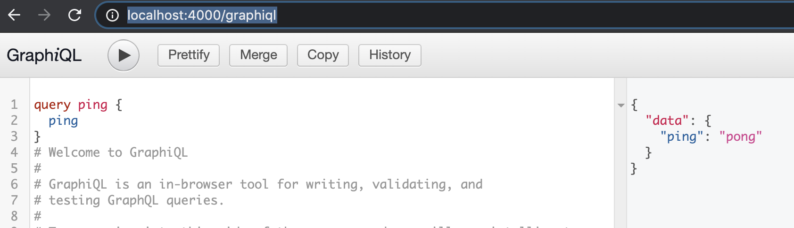

Configurando o GraphQL
Agora que temos contexto de como funciona o Actix, será muito mais simples criar um novo serviço, assim o objetivo neste capítulo será focar na parte GraphQL deste novo serviço. Antes vamos entender um pouco o que é GraphQL e porque vamos utlizar essa tecnologia.
GraphQL
GraphQL é uma tecnologia desenvolvida pelo Facebook que consiste em uma linguagem de queries para APIs e um runtime para executar estas queries. Além disso, GraphQL provê ferramentas para entender e descrever os dados das APIs, da ao cliente o poder de decidir quais dados quer consumir e facilita e evolução de APIs. De forma resumida, são quatro etapas que envolvem o GraphQL:
- Descrever seus dados via tipos:
type Project {
name: String
tagline: String
contributors: [User]
}
- Receber um request com os dados a serem consumidos:
{
project(name: "GraphQL") {
tagline
}
}
- Realizar as consultas a todos os serviços/APIs necessários
- Responder exatamente o que o cliente pediu.
{
"data": {
"project": {
"tagline": "A query language for APIs"
}
}
}
Assim, o motivo de escolhermos GraphQL como tecnologia para este serviço é a necessidade de consultar diversas fontes para um mesmo request, como mais de uma API e caching.
Queries Básicas
Vamos começar com o básico, fazer o sistema responder 404 NOT_FOUND para rotas diversas e depois iniciar com uma query que responderá um simples pong quando chamarmos a query ping. Para isso, nosso primeiro passo é criar o serviço com cargo new recommendations-gql --bin, e adicionar as dependências básicas ao nosso Cargo.toml:
[dependencies]
actix-web = "2.0.0"
actix-rt = "1.0.0"
juniper = "0.14.2"
serde = { version = "1.0.104", features = ["derive"] }
serde_json = "1.0.44"
serde_derive = "1.0.104"
Agora precisamos adicionar o caso de status code 404. Para esse caso vamos utilizar outro recurso que não utilizamos antes que é o default_service. Ele nos permite responder um valor default para qualquer rota não encontrada, neste caso escrevemos 404:
// main.rs
use actix_web::{web, App, HttpServer};
#[actix_rt::main]
async fn main() -> std::io::Result<()> {
HttpServer::new(move || {
App::new()
.default_service(web::to(|| async { "404" }))
})
.bind("127.0.0.1:4000")?
.run()
.await
}
Pronto! ao acessar localhost:4000 recebemos um 404. Próximo passo é adicionarmos a query de ping.
Ping em GraphQL
Primeiro passo para o ping seria pensarmos o schema correspondente na estrutura GraphQL. Assim, nosso objetivo é realizar uma query nomeada ping que retorne uma string contento "pong". Para isso sabemos que precisaremos que uma função ping que retornar um Result<String, Error> que contém pong, algo como:
#![allow(unused)] fn main() { fn ping() -> Result<String, Error> { Ok(String::from("pong")) } }
Mas esta função precisa estar dentro de um contexto Query do graphql e para isso criamos uma struct chamada de QueryRoot, que corresponde a raiz das queries, e aplicamos a macro #[juniper::object] que transforma essa implementação de queries, impl QueryRoot, em um objeto graphql do tipo Query. Note que o tipo de retorno é um FieldResult, que corresponde a um tipo Result que já abstraiu o tipo do Error para um erro que o GraphQL possa entender.
#![allow(unused)] fn main() { use juniper::FieldResult; pub struct QueryRoot; #[juniper::object] impl QueryRoot { fn ping() -> FieldResult<String> { Ok(String::from("pong")) } } }
Segundo passo seria declarar um tipo Schema que poderá ser utilizado pelos handlers do Graphql para validar as queries, as mutations e os tipos. Esse Schema é composto de duas partes, a QueryRoot e a MutationRoot, que são designadas a um nó contendo os schemas chamado RootNode, pub type Schema = RootNode<'static, QueryRoot, MutationRoot>;. Como ainda não temos nenhuma mutation, nosso MutationRoot é bastante simples:
#![allow(unused)] fn main() { pub struct MutationRoot; #[juniper::object] impl MutationRoot {} }
Queries e Mutations
O objetivo de uma query é "perguntar" para o sistema algum conjunto de infotmações, enquanto o objetivo da mutation é "mutar" alguma informação que o sistema possui, mas suas declarações são bastante parecidas com as das queries.
Por último precisamos de uma função que retorne o schema que criamos, que chamaremos de create_schema:
#![allow(unused)] fn main() { use juniper::FieldResult; use juniper::RootNode; pub struct QueryRoot; #[juniper::object] impl QueryRoot { fn ping() -> FieldResult<String> { Ok(String::from("pong")) } } pub struct MutationRoot; #[juniper::object] impl MutationRoot {} pub type Schema = RootNode<'static, QueryRoot, MutationRoot>; pub fn create_schema() -> Schema { Schema::new(QueryRoot {}, MutationRoot {}) } }
Com isso podemos criar o módulo schema em schema.rs. Próximo passo é disponibilizar este Schema para a aplicação, podemos fazer isso utilizando a função data de actix_web::App:
#[macro_use] extern crate juniper; extern crate serde_json; use actix_web::{web, App, HttpServer}; mod schemas; use crate::schemas::{create_schema, Schema}; #[actix_rt::main] async fn main() -> std::io::Result<()> { let schema: std::sync::Arc<Schema> = std::sync::Arc::new(create_schema()); HttpServer::new(move || { App::new() .data(schema.clone()) .default_service(web::to(|| async { "404" })) }) .bind("127.0.0.1:4000")? .run() .await }
Estamos utilizando a definição let schema: std::sync::Arc<Schema> = para fazer um vínculo da variável schema ao contexto de main, note, também, que seu tipo precis ser std::sync::Arc, pois todas as threads do graphql estarão acessado esse Schema. O próximo passo é definirmos as rotas dos handlers para o GraphQL, fazemos isso no módulo handlers e exportamos estas infos pela função routes:
#[macro_use] extern crate juniper; extern crate serde_json; use actix_web::{web, App, HttpServer}; mod handlers; mod schemas; use crate::handlers::routes; use crate::schemas::{create_schema, Schema}; #[actix_rt::main] async fn main() -> std::io::Result<()> { let schema: std::sync::Arc<Schema> = std::sync::Arc::new(create_schema()); HttpServer::new(move || { App::new() .data(schema.clone()) .configure(routes) .default_service(web::to(|| async { "404" })) }) .bind("127.0.0.1:4000")? .run() .await }
Assim, a função routes do módulo handlers possuirá a seguinte estrutura:
#![allow(unused)] fn main() { pub fn routes(config: &mut web::ServiceConfig) { config .route("/graphql", web::post().to(graphql)) .route("/graphiql", web::get().to(graphiql)); } }
Nossa configuração possuirá duas rotas /graphql, que é a rota na qual fazemos um post com nossa query, e /graphiql, que será uma rota que nos exibirá uma página web interativa da nossa aplicação:

Note que a direita na rota graphiql existe uma aba chamada de Documentation Explorer, ela nos permite saber as queries e as mutations disponíveis, assim como seus tipos de entrada e tipos de retorno.
Agora, o handler graphiqlé bastante simples, sua única função é encondar em HTML o handler graphql:
#![allow(unused)] fn main() { pub async fn graphiql() -> HttpResponse { HttpResponse::Ok() .content_type("text/html; charset=utf-8") .body(graphiql_source("/graphql")) } }
Com isso, podemos finalmente entender o que o handler graphql faz:
#![allow(unused)] fn main() { use std::sync::Arc; use actix_web::{web, Error, HttpResponse}; use juniper::http::graphiql::graphiql_source; use juniper::http::GraphQLRequest; use crate::schemas::{Schema}; pub async fn graphql( schema: web::Data<Arc<Schema>>, data: web::Json<GraphQLRequest>, ) -> Result<HttpResponse, Error> { let res = web::block(move || { let res = data.execute(&schema, &()); Ok::<_, serde_json::error::Error>(serde_json::to_string(&res)?) }) .await .map_err(Error::from)?; Ok(HttpResponse::Ok() .content_type("application/json") .body(res)) } }
O handler graphql recebe como argumento dois campos 1. schema através do tipo actix web::Data<Arc<Schema>> e o request data do tipo web::Json<GraphQLRequest>. A magia acontece na linha data.execute(&schema, &()), na qual o GraphQL executa nosso request, data, com base no schema. Depois disso, encodamos o resultado para Json e respondemos como um Result<HttpResponse, Error> oriundo de Ok(HttpResponse::Ok().content_type("application/json").body(res)). Se você executar este código será possível fazer a query ping em localhost:4000/graphql:

Testando o endpoint
Como na parte anterior do livro falamos de como criar testes de integração no diretório tests/, agora vamos partir para outra estratégia, que é criar testes de integração dentro do src/, pois isto nos permite tirar proveito da flag #[cfg(test)]. Para fazermos isso, precisamos criar um módulo test, anotoado com a flag #[cfg(test)] em main.rs:
#![allow(unused)] fn main() { ... mod handlers; mod schemas; #[cfg(test)] mod test; ... }
Depois disso é preciso criar o arquivo src/test/mod.rs, que declarará o nome dos submodulos de teste, neste caso um simples pub mod ping;. Para testarmos o ping precisamos criar o módulo que declaramos em src/test/ping.rs:
#![allow(unused)] fn main() { #[cfg(test)] mod ping_readiness { use crate::handlers::routes; use crate::schemas::{create_schema, Schema}; use actix_web::{test, App}; use bytes::Bytes; #[actix_rt::test] async fn test_ping_pong() { let schema: std::sync::Arc<Schema> = std::sync::Arc::new(create_schema()); let mut app = test::init_service(App::new().data(schema.clone()).configure(routes)).await; let req = test::TestRequest::post() .uri("/graphql") .header("Content-Type", "application/json") .set_payload("{\"query\": \"query ping { ping }\"}") .to_request(); let resp = test::read_response(&mut app, req).await; assert_eq!(resp, Bytes::from_static(b"{\"data\":{\"ping\":\"pong\"}}")); } } }
A estrutura do teste é praticamente igual a estrutura que estavamos utilizando anteriormente, as únicas diferenças são let schema: std::sync::Arc<Schema> = std::sync::Arc::new(create_schema());, que a rota agora é /graphql e que o payload é um json contendo um campo query seguido de sua query "{\"query\": \"query ping { ping }\"}".
Agora vamos a implementação da primeira query de consulta, que chamaremos de bestPrices.